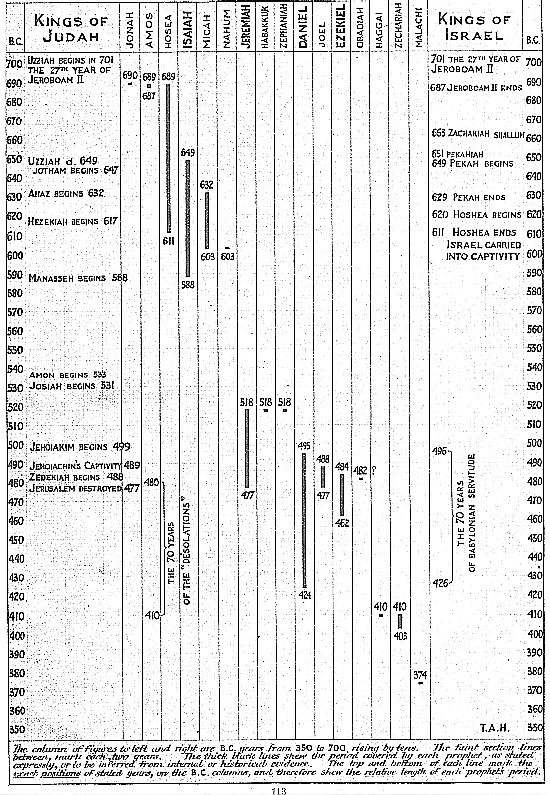

77. THE CHRONOLOGICAL ORDER
OF
THE PROPHETS.
- That the Canonical order of the books of the prophets
is not their Chronological order is well known.
But the dates usually to be found at the head or in the margin of our
Bibles -- as well as in many of the "Tables" supplied in "Aids" to students
-- involve the subject in hopeless confusion.
The four prophets commonly styled "Greater" (or Longer), viz. ISAIAH,
JEREMIAH, EZEKIEL, and DANIEL, are all dated.
Of the other twelve, called "Minor" (or shorter), six are dated
and six are undated. (See the Structure on p. 1206).
- The dated books are HOSEA, AMOS, MICAH, ZEPHANIAH, HAGGAI, and ZECHARIAH.
- The undated books are JOEL, OBADIAH, JONAH, NAHUM, HABAKKUK,
and MALACHI.
Of the whole sixteen, therefore, we have ten dated and six
undated. (See Ap. 10.)
From the particulars given in the dated books themselves, we are enabled
to lay down with precision the years and periods covered by the respective
prophecies.
With regard to the undated books the case is different; and we have
to rely upon the guidance of their internal evidence. But this in
almost every case is so clear, that there is no great difficulty in assigning
each of the prophetical books to its respective chronological position
(Obadiah being perhaps the only exception).
The Chart on p. 113 has been prepared accordingly.
It must be premised that the periods indicated by the thick black lines
are the duration of the periods in which the Divine Message continued to
"come" to and through the particular prophet named : e.g. ISAIAH
is shown on the Chart as 649-588 B.C., thus comprising a period of sixty-one
years. This does not represent the years of the prophet's life,
which in all probability extended to some 81 or 83 years. (See notes
on p. 930.)
- It is a Jewish belief that JEREMIAH and ZECHARIAH were contemporaries.
This is quite possible. We are not told when, or how, or where Jeremiah
died. When Jerusalem was destroyed finally by Nebuchadnezzar (477
B.C.) Jeremiah would be about 57 years old. He may easily have lived
another thirty or forty, or even more, years after that event. (*1)
If we suppose he outlived the destruction of Jerusalem by forty
years, then the year of his death would be 437 B.C., eleven years before
the end of the Babylonian Captivity, in 426 B.C.
ZECHARIAH began his seven years of prophetic ministry twenty-seven
years later, in 410 B.C.
But we are not told anything about him in Scripture, save that his grandfather
was a prophet; neither have we any clue to his age, as we have e.g. in
the cases of JEREMIAH and DANIEL. ZECHARIAH may very well have been
at least thirty or forty years of age in 410 B.C., when he gives us his
first date (1:1). Consequently, he would have been contemporary with
the great Benjamite priest for from three to thirteen years!
- It is further necessary to state, and important to be observed,
that the dates given in the Chart on p. 113 have been charted down from
the dating given (or suggested by internal evidence) in the prophetic books
themselves, and NOT vice versa. So the student may understand
that the remarkable and significant groupings of the prophets as therein
depicted are in no wise "manipulated" or "fitted in" to suit any preconceived
ideas or theories. They are charted down simply from the dates and
the data afforded by the sacred records themselves, and tell clearly their
own story.
- Turning now to the Chart itself (p. 113), it must be further
premised that "section-paper" has been used, as in Ap. 50. This is
highly important; as only thus can the exact relative proportions
of the length of each prophetical ministry be presented accurately to the
eye. The thick black lines represent the period covered by
each prophet, either as expressly stated, or to be inferred from internal
or historical evidence.
And here, the value of the section-paper is at once apparent :
as these black lines are not merely an approximate in their proportions
of length one to another -- as would be the case if they were set up in
type; but, in each and every case, they begin and end exactly at
the very year stated or indicated. Thus the eye is enabled at once
to grasp the proportionate lengths of each and all of the prophetical periods;
the overlapping and concurrences in each particular group; and their historical
position as shown on the background of the reigns of the kings of Judah
and Israel.
The columns of figures to the left and right are the B.C. years, rising
by tens from 350 to 700 B.C. Each of the larger section-squares thus
shows twenty years, and each of the small ones two years.
On this plan, every date, year, and period has been charted down, and
can be checked by the student with absolute exactitude.
It must also be observed that the thick black lines themselves
mark the exact positions of the beginning and ending of the years shown
on the figure-columns to the left and right, and indicated by the fainter
horizontal lines -- and NOT the figures placed directly above and below
in each case. These latter merely state the years which begin and
end each period, as shown accurately by the top and bottom of the black
line throughout : e.g. JEREMIAH is given as 518-477 B.C. The
top
and bottom of the thick black stroke are on the lines of these respective
years in the figure-columns.
Where there is only one figure given, as in the case of HABAKKUK and
ZEPHANIAH, viz. 518 B.C., it will be understood that only one date year
is indicated in the Scriptures.
THE TABLE.
- It will be seen on referring to the Chart on p. 113 that the
sixteen prophetical books fall into four remarkable and well defined divisions,
separated by three "breaks", or periods of years as shown below :--
| |
YEARS. |
The First Group consists of six prophets : viz. : |
|
JONAH, AMOS, HOSEA, ISAIAH, MICAH, NAHUM,
covering a period of |
102 |
Then follows a great "gap" or "break" of |
70 |
| |
|
The Second Group consists of seven prophets : viz. : |
|
JEREMIAH, HABAKKUK, ZEPHANIAH, DANIEL, JOEL,
EZEKIEL, OBADIAH covering a period of |
94 |
Followed by a "gap" or "break" of |
14 |
| |
|
The Third Group consists of two prophets : viz. : |
|
HAGGAI, ZECHARIAH covering a period of |
7 |
Then follows a "gap" of |
29 |
Which is closed by the prophet MALACHI |
|
| |
|
The whole period covered by the sixteen prophets is therefore |
316 |
From the above it is seen that MALACHI is to be reckoned as being separate
and apart from the rest; and not, as usually presented, linked together
with HAGGAI and ZECHARIAH. "By the Hebrews, Malachi is known
as 'the Seal of the Prophets', and as closing the Canon of the Jewish
Scriptures." (*2)
The other fifteen prophets (5 x 3) arrange themselves in three groups
of 6, 7, and 2; and the period covered by these collectively -- including
the breaks -- is 287 years (forty-one sevens).
- The First Group commences with JONAH and ends with NAHUM.
Both are connected with Nineveh. This group consists of six prophets,
and the period they cover is 102 years (seventeen sixes).
Between the First and Second Groups there is the great "gap" or "break"
of seventy years (ten sevens, see Ap. 10). According to Jewish
tradition, ISAIAH perished in the Manassean persecution (see the Note on
p. 930). If this persecution took place, or culminated, about five
years after Manasseh's accession -- as is most probable -- this would be
584 B.C.; and that year is sixty-five years from the dated
commencement of Isaiah's "Vision" : viz., the year in which King
UZZIAH died (649 B.C. : see Ap. 50. VII, p. 68, and cp. the Chart
on p. 113).
We have, however, no indication that "the Word of the Lord came" to
ISAIAH later than the end of the reign of ZEDEKIAH, and MANASSEH'S
accession in 588 B.C.
Therefore, from that year on, and until "the thirteenth year of Josiah"
(518 B.C.), there was no "coming" of "the Word"; but, instead, a
long solemn silence on the part of Jehovah for seventy years!
(588 - 518 = 70.) This silence was broken at length by the Divine
utterances through JEREMIAH, HABAKKUK, and ZEPHANIAH simultaneously, in
518 B.C.; and the Word then "came" in an unbroken sequence of ninety-four
years (518 - 424 = 94) through the seven prophets associated with
the final scenes in the history of the Southern Kingdom, JUDAH --
including the Babylonian Captivity -- as the six earlier prophets
had been associated with the closing scenes of the Northern Kingdom,
which ended in 601 B.C.
The Second Group closes with the latest date recorded by Daniel, "the
third year of Cyrus" (Dan. 10:1), i.e. in 424 B.C.
Then occurs a short break of fourteen years (two
sevens)
between DANIEL and HAGGAI (424 - 410 = 14), followed by
The Third Group, consisting of HAGGAI and ZECHARIAH, extending over
seven years (410 - 403 = 7).
The seven years covered by Zechariah are succeeded by the last "break"
of twenty-nine years, closed by the affixing of "the Seal of the
Prophets", MALACHI, in 374 B.C. This was exactly
thirty years
from the restoration of the Temple worship and ritual, commencing after
the Dedication of the Temple in 405 B.C., with the First Passover in Nisan,
404 B.C. (Ap. 58, p. 84).
This year (374 B.C.) marked the commencement of the last great national
testing time of the People in the land : viz. four hundred years
(40 x 10), and ended with the beginning of Christ's ministry in A.D. 26.
- On examining this chronological grouping, it will be seen
that it presents the prophetical books to us as
a whole; and thus, in a manner is at variance with the usual
classification into "Four Prophets the Greater (or Longer), and Twelve
Prophets the Minor or (Shorter)."
Although it is, of course, manifestly true that ISAIAH, JEREMIAH, EZEKIEL,
and DANIEL are "greater", in the sense that they are messages of ampler
dimensions, and far wider scope than the majority of the others, yet --
according to their chronological positions in the Scriptures, as shown
in the Chart (p. 113) -- it would appear that they are grouped together
by the Divine Spirit, with the so-called "Minor" (or Shorter) prophets,
as being units only in a particular "coming" of the Word of Jehovah,
during certain clearly defined periods of time connected with the close
of the national history of Israel's sons as possessors of the land.
It is interesting to note the close association of the figures "6" and
"7" with these periods.
- The three groups together cover a period of 203 years, during
which "the Word of the Lord came" through the prophets (102 + 94 + 7 =
203); and 203 is twenty-nine sevens.
- The prophecies of the First Group, linked together by the
number of Man "6" (Ap. 10), are seen to be closely connected with the last
hundred years or so of the Northern Kingdom.
The prophecies of the Second Group, linked together by the special number
of Spiritual Perfection "7" (Ap. 10), are as closely connected with the
destruction and punishment of JUDAH and JERUSALEM.
- In the First Group, HOSEA, ISAIAH, and MICAH were contemporary
for twenty-one years (three sevens); viz. from 632 to 611 B.C.
In the Second Group, JEREMIAH, DANIEL, JOEL, and EZEKIEL are contemporaries
for seven years (one seven); viz. from 484 to 477 B.C.
If OBADIAH'S date is 482 B.C., then we have five prophets all contemporaries
during this period. And five is the number associated with Divine
Grace (Ap. 10).
After the "break" of fourteen years (two sevens) between the
Second and Third Groups, we have ZECHARIAH, the last of the
fifteen
prophets of the three groups, continuing from 410 to 403 B.C. (one seven);
HAGGAI being contemporary with him in 410.
The fifteen prophets represent the number of Grace thrice repeated
(5 x 3).
- MALACHI'S date is 374 B.C. As stated above, this is
exactly thirty years after the Restoration, and the resumption of the Temple
worship and ritual, beginning with the Passover in 404 B.C. (Ezra 6:19).
The "Seal of the Prophets" was therefore affixed thirty years from that
important start-point, and twenty-nine clear years from Ezra's last
date : viz., 1st of Nisan 403 B.C. (Ezra 10:17), the year that witnessed
the Dedication of the Wall (Neh. 12:27-47) and the Reformation of the People
under Nehemiah (Neh. 13:1-31).
- It may also be noted that the Book of JONAH -- the prophet
quoted by our Lord as the "Sign" of His own Resurrection -- commences
the grouped fifteen, while ZECHARIAH ends them with the glorious
and detailed statements of the Return of the King to reign as "the Lord
of all the earth".
Again : as the "break" of twenty-nine years follows after Zechariah,
before the "Seal", MALACHI, is affixed in 374 B.C., this points to a fact
of great importance : viz., that the O.T. is really closed by
the Book of Zechariah and not Malachi, as usually understood.
Malachi marks the commencement of the great final probationary period of
400 years, which ended with the coming of "My Messenger" (John the Baptist)
followed by the Advent of "the Messenger of the Covenant" (Messiah Himself).
MALACHI is thus seen to be linked on to John the Baptist (cp. Mal. 4:5,
6, and Matt. 11:10-15), and "seals" together the last page of the O.T.,
and the beginning of "The Book of the Generation of Jesus the Messiah."
notes :
(*1) The belief of some that Heb. 11:37 refers to Jeremiah is
based on the Jewish tradition that the prophet was "stoned" to death in
Egypt. But of this we have no proof.
(*2) WORDSWORTH on Malachi, Prelim. note.
The Table From Page 113.

|